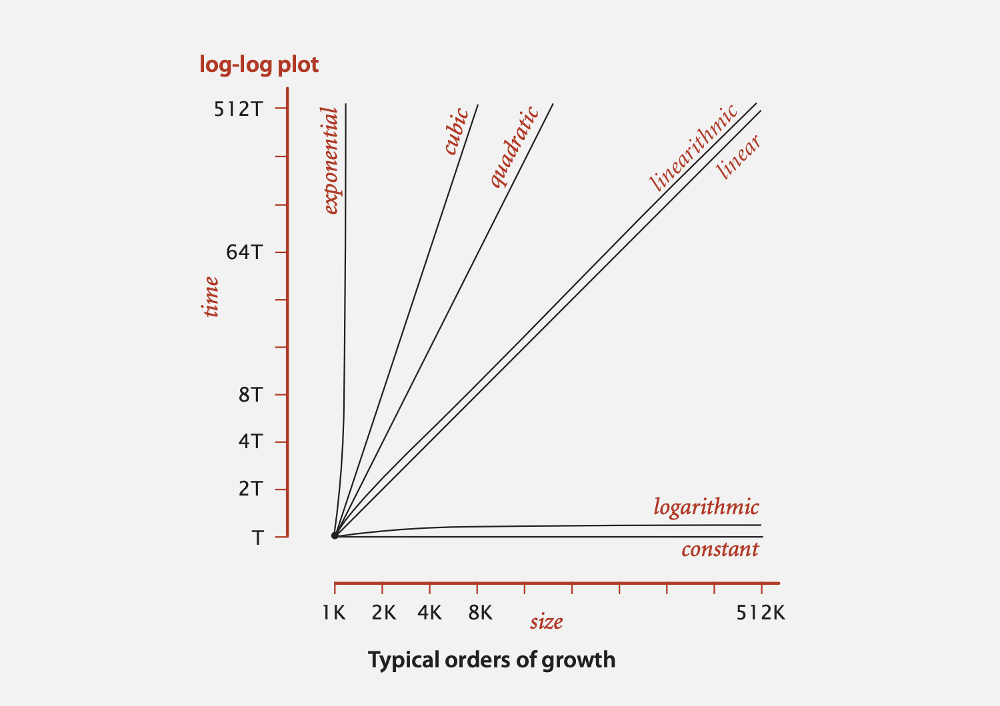

Notebook
This is a personal notebook. See repo here. Let's see how often I can keep this updated...
How to update my note:
https://rust-lang.github.io/mdBook
And take a look at Markdown Help for some hints.
mdbook serve --dest-dir docs --open- Edit content
- Then perhaps build again
mdbook build --dest-dir docs - Then push
Some hidden code here
use warp::Filter; #[tokio::main] async fn main() { let routes = warp::any().map(|| "Hello, World!"); warp::serve(routes).run(([127, 0, 0, 1], 3030)).await; }
How to add some graphs?
https://github.com/badboy/mdbook-mermaid
And see the Dockerfile in the repo how to make an image that can build the site.
About github page build
This github action peaceiris/actions-gh-pages seems really handy. See the config file here
Note 1
Some random notes that could be useful:
How to make http slides:
https://liufuyang.github.io/http-kv/demo.html
Algorithms

Big O notations
Commonly-used notations in the theory of algorithms
| notation | example | provides | shorthand for | used to |
|---|---|---|---|---|
| Big Theta | \( \Theta (N^2) \) | asymptotic order of growth | \( {1 \over 2} \ N^2 \) \( 10 \ N^2 \) \( 5 N^2 + 2 N \log N + 3 N \) | classify algorithms |
| Big Oh | \( O (N^2) \) | \(\Theta(N^2) \) and smaller | \( 10 \ N^2 \) \( 100 \ N \) \( 2 N \log N + 3 N \) | develop upper bounds |
| Big Omega | \( \Omega (N^2) \) | \( \Theta(N^2) \) and larger | \( {1 \over 2} \ N^2 \) \( N^5 \) \( N^3 + 2 N \log N + 3 N \) | develop lower bounds |
| Tilde * | \( \sim 10 \ N^2 \) | leading term | \( 10 \ N^2 \) \( 10 \ N^2 + 22 N \log N \) \( 10 \ N^2 + 2 N + 37 \) | provide approximate model |
* A common mistake is interpreting Big-Oh as an approximate model Tilde.
Stack and Queue
Two major implementations
- Linked list impl
- Array impl
which can both implement stack and queue.
Linked list impl
For stack or queue, a single direction link list will do,
so only need a head point to the head node, and a tail point to the tail node.
(head) -> (a,) -> (b,) -> (c,)
(tail) - - - - - - - - - - ^
A simple unsafe Rust implementation could use structures like:
#![allow(unused)] fn main() { pub struct Node<T> { element: T, next: Option<Box<Node<T>>>, } pub struct LinkedList<T> { head: Option<Box<Node<T>>>, tail: *mut Node<T>, } }
More code can be see here on my own bad Rust stack/queue implementation
pushadd node viahead;enqueueadd node viatail;popordequeue, just take out nodes fromhead.
Or in short adding on both ends, removing from head only.
Array impl
0 1 2 3 4 5 6 7
[__, __, a, b, c, __, __, __,]
(head) ---^
(tail) - - - - - - - ^
pushorenqueue, just add viatail;popremoves nodes fromtail;dequeueremoves fromhead;
Or in short adding from tail only, removing from both ends.
Other trivial details:
- When reaching the end while adding, increase capacity by factor of 2;
- When
tailless than 1/4 of capacity, can reduce capacity by 1/2 of current capacity, to save space; - In Java, when removing element from the list, besides change
head and tail values, also set
nullto the array so to let those removed nodes can be garbage collected later.
Dequeue - a double-ended queue
Dequeue -a double-ended queue or deque (pronounced “deck”)
is a generalization of a stack and a queue that supports adding and removing items from either the front or the back of the data structure.
One type of implementation could be using a double linked list, so both ends can remove nodes.
Another approach (I suppose) could be using two stacks, with either stack implementations mentioned above.
Then one stack is kept as positive while another kept as
negative.
So the deque can probably be implemented as something like:
// add the item to the front
public void addFirst(Item item) {
negative.push();
}
// add the item to the back
public void addLast(Item item) {
positive.push();
}
// remove and return the item from the front
public Optional<Item> removeFirst() {
if (!negative.isEmpty) {
return negative.pop();
} else {
return positive.dequeue();
}
}
// remove and return the item from the back
public Optional<Item> removeLast() {
if (!positive.isEmpty) {
return positive.pop();
} else {
return negative.dequeue();
}
}
Haven't tried to do my homework with the Princeton course,
but hopefully this works. Otherwise the code might later
be at here.
Update: As the homework requires constant worst time so
I used a double linked list to implement it. So I can
just guess now the above idea will work :)
RandomizedQueue
A RandomizedQueue can be implemented with a normal
array implementation queue, plus using Knuth Shuffle
during enqueue operation:
public void enqueue(Item item) {
if (item == null) {
throw new IllegalArgumentException();
}
if (items.length == tail) {
resize(Math.max(items.length, size() * 2));
}
items[tail] = item;
tail++;
swap(tail - 1, StdRandom.uniform(head, tail));
}
Key is on that swap call. Basically the shuffle
idea is very simple, when adding a new item into
the array, then randomly select an item from the
array (including the newly added one) then swap
the newly added one with the selected item.
See code here.
By the way, this Knuth Shuffle idea seems
pretty powerful as it uses linear time for shuffling
a N-th array. Better than make N random floats and
sort them to have a new index list.
Linked list impl vs Array impl
I guess simply put,
linked listis good for constant time operations in the worst case, though slower each time, an uses more space;resizing arrayis in most cases very fast, occasionally slow when resizing, with the claim of adding an element has constant amortized time cost. And less wasted space
Use stack/queue for Search Algorithm
One quite useful thing about stack and queue is that
stackcan be used forDepth-First Search(DFS)queuecan be used forBreadth-First Search(BFS)
Quite interesting.
It seems that a general "Graph Search" type of problem can be solved by this abstract framework:
agent- entity that perceives its environment and acts upon that environmentstate- a configuration of the agent and its environment;initial state- the state in which the agent beginsactions- choices that can be made in a state, like edges in graphs;ACTIONS(s)returns the set of actions that can be executed in state stransition modelorRESULT(s, a)returns the state resulting from performing action a in state sgoal test- way to determine whether a given state is a goal statepath cost- numerical cost associated with a given pathfrontier- a stack or queue to keep track of the nodes to be explored
Then with a node defined as
a data structure that keeps track of
- a
state - a
parent(node that generated this node) - an
action(action applied to parent to get node) - a
path cost(from initial state to node)
Then a search algorithm can be defined as:
Search algorithm
- Start with a
frontierthat contains the initial state. - Start with an empty explored set.
- Repeat:
- If the
frontieris empty, then no solution. - Remove a
nodefrom thefrontier. (Also using a set to keep track of visitednodes) - If
nodecontains goal state (goal test), return the solution. - Add the
nodeto the explored set. - Expand
node(ACTIONS + RESULTS), add resultingnodesto thefrontierif they aren't already in thefrontieror the explored set.
- If the
For example, in a simple maze search problem, the state of
the node is just the current position, the actions of the
node is just the next possible directions that the agent can go to, leading to the following states.
In a social network problem, for example in the homework's
movie actors degree problem, the state of
the node is just the actor id, the actions of the
node is just the movies this actor performed, which can lead to other state (or actors).
Some example code on the degree problem might look like this.
def shortest_path(source, target):
"""
Returns the shortest list of (movie_id, person_id) pairs that connect the source to the target.
If no possible path, returns None.
Action: movie id
State: person id
"""
start = Node(state=source, parent=None, action=None)
frontier = QueueFrontier()
frontier.add(start)
explored = set()
while True:
if frontier.empty():
return None
node = frontier.remove()
explored.add(node.state)
for action in people[node.state]["movies"]:
for state in movies[action]["stars"]:
if not frontier.contains_state(state) and state not in explored:
child = Node(state=state, parent=node, action=action)
frontier.add(child)
checkNode = child
if checkNode.state == target:
actions_and_states = []
while checkNode.parent is not None:
actions_and_states.append((checkNode.action, checkNode.state))
checkNode = checkNode.parent
actions_and_states.reverse()
return actions_and_states
And normally a queue is used as the frontier in order
to perform Breadth-First Search - which seem to be the
best option for general problems as you want to find the shortest path to the goal.
One variant of the algorithms is a greedy best-first search
A* search: search algorithm that expands node with lowest value ofg(n) + h(n)g(n)= cost to reach nodeh(n)= estimated cost to goal- optimal if
h(n)is admissible (never overestimates the true cost), andh(n)is consistent (for every node n and successor n' with step cost c,h(n) ≤ h(n') + c)
Another variant of this type of algorithm is Adversarial Search - which is used for problems like Tic-Tac-Toe games
So for games:
- S0 : initial state
- PLAYER(s) : returns which player to move in state s
- ACTIONS(s) : returns legal moves in state s
- RESULT(s, a) : returns state after action a taken in state s
- TERMINAL(s) : checks if state s is a terminal state
- UTILITY(s) : final numerical value for terminal state s
One method is called MinMax
- Given a state s:
- MAX picks action a in ACTIONS(s) that produces highest value of MIN-VALUE(RESULT(s, a))
- MIN picks action a in ACTIONS(s) that produces smallest value of MAX-VALUE(RESULT(s, a))
Or in code as:
function MAX-VALUE(state):
if TERMINAL(state):
return UTILITY(state)
v = -∞
for action in ACTIONS(state):
v = MAX(v, MIN-VALUE(RESULT(state, action)))
return v
function MIN-VALUE(state):
if TERMINAL(state):
return UTILITY(state)
v = ∞
for action in ACTIONS(state):
v = MIN(v, MAX-VALUE(RESULT(state, action)))
return v
And some special pruning method such as Alpha-Beta Pruning is needed for game problems with very large search space.
Divide and Conquer
- Divide into smaller problems
- Conquer via recursive calls
- Combine solutions of sub-problems into one for the original problem.
Typical problems:
-
Merge sort (recursive or bottom up)
-
Karatsuba Multiplication
-
Counting Inversions
Example: (1, 3, 5, 2, 4, 6), having inversions: (3,2), (5,2), (5, 4)
Can be used for: calculate the similarity between 2 persons' 10 movies sort order.
Counting Inversions
Naive implementation is \( O(n^2) \) as we need 2 for loops. Via divide and conquer, what we need is this
Count(array a, length n) {
if n == 1 return 0
else
x = Count(left half of a, n/2)
y = Count(right half of a, n/2)
z = CountSplitInv(a, n)
return x + y + z
}
CountSplitInv counting the split inversions, where first
index is in the first half array, and second index is in the
second half array.
Then the question is, can we do CountSplitInv with
\( O(n) \)? If so, the divide part has \( O(\log n) \), which gives us the final algorithms speed of \( O(n \log n) \). Intuitively feels not possible.
Piggybacking on Merge Sort
SortAndCount(array a, length n) {
if n == 1 return 0
else
b, x = SortAndCount(left half of a, n/2)
c, y = SortAndCount(right half of a, n/2)
d, z = MergeAndCountSplitInv(b, c, n)
return d, x + y + z
}
After sorting, we can do the trick, or "piggybacking" while merge:
i=0
j=0
z=0
for k = 0 .. n-1 {
if b[i] <= c[j] {
d[k] = b[i]
i++
} else {
d[k] = c[j]
j++
z += b.len - i // piggybacking part of merge
}
}
So if b's element all less than c's element,
before j starts to add, i will be as b.len, making z=0 in the end.
Or the general claim:
Claim: the numberr of split inversions involving an element
c_jfrom 2nd arraycis precisely the number of elements left in the 1st arraybwhenc_jis copied to the outputd.
So basically we ended with a very similar thing to Merge Sort, only one more operation on the merge operations. So we achieved \( O(n \log n) \). Pretty impressive.
The Master Method
\[ \begin{align} \text{If } \quad T(n) & <= a T (\frac{n}{b}) + O(n^d) \\ \text{Then } \quad T(n) & = \begin{cases} O(n^d \log n) & \quad \text{if } a = b^d \text{ (Case 1)} \\ O(n^d) & \quad \text{if } a < b^d \text{ (Case 2)} \\ O(n^{\log_{b}{a} }) & \quad \text{if } a > b^d \text{ (Case 3)} \end{cases} \end{align} \]
For example
- merge sort having
a=2, b=2, d=1so it is \( O(n \log n) \), which is case 1 - binary search having
a=1, b=2, d=0so it is \( O(\log n) \), which is case 1 - Karatsuba Multiplication
a=3, b=2, d=1so it is \( O(n^{\log_2 3}) = O(n^{1.59}) \), which is case 3
A simple proof could be: At each level \( j=0,1,2,..,log_b(n) \), there are \(a^j\) subproblems, each of size \( n \over b^j \). Then the total number of operations needed to solve the whole problem for each level is: \[ a^j C {\left[\frac{n}{b^j}\right]}^d = C n^d {\left[\frac{a}{b^d}\right]}^j \] Thus the total number of the whole problem is: \[ \text{total work} \leq \displaystyle\sum_{j=0}^{\log_b n} C n^d {\left[\frac{a}{b^d}\right]}^j \] where
- \( a \): rate of subproblem proliferation (
RSP) - \( b^d \): rate of work shrinkage per subproblem (
RWS)
And we see:
- If
RSP < RWS, then the amount of work is decreasing with the recursion levelj - If
RSP > RWS, then the amount of work is increasing with the recursion levelj - If
RSP = RWS, then the amount of work is the same at every recursion levelj
Sort
- Merge sort
- \( n \log(n) \) in worst case
- a
stablesort (sort by column A, then sort by column B, then for the same B, order of A preserves) - simple to understand, divide and conquer (or bottom up to avoid recursion);
log(n)levels, and each level's merge takesnoperation, thus \( n \log(n) \) will do
- Quick sort
-
\( n \log(n) \) in worst case
-
not a
stablesort -
more tricky but not difficult to understand, divide and conquer:
make sure an element's left are all smaller (or equal to) it, and the right part are all bigger than it (let's called it
partitioned); then continue to sort both on left and right part; -
to make an array
partitionedby, for eg. the first element:[3, 5, 2, 6, 1, 4] i---^ j---^Start with
iandjboth after first element.istands forleft of me is smaller than pivot;jstands forleft of me is partitioned.So basically we loop each element until
jisn;For each step:
- If
a[j] >= pivot, then justj++; - If
a[j] < pivot, thenswap(i, j),i++, j++; - When
jreaches the end,swap(i-i, 0), returni-1
[3, 5, 2, 6, 1, 4] i---^ j------^swap
[3, 2, 5, 6, 1, 4] i------^ j---------^[3, 2, 5, 6, 1, 4] i------^ j------------^swap
[3, 2, 1, 6, 5, 4] i---------^ j------------^[3, 2, 1, 6, 5, 4] i---------^ j-----------------^then last swap and return
i=2[1, 2, 3, 6, 5, 4] i---------^ j-----------------^ - If
-
Dynamic programming
Fibonacci
Recursion - Exponential waste
A novice programmer might implement a recersion like this below. But it has a problem called expoential waste.
public class FibonacciR
{
public static long F(int n)
{
if (n == 0) return 0;
if (n == 1) return 1;
return F(n-1) + F(n-2);
}
public static void main(String[] args)
{
int n = Integer.parseInt(args[0]);
StdOut.println(F(n));
}
}
The issue of the recursion above is that there are many duplicated calculations performed. So the core of the algorithms of opertimization is to reduced the number of operations. And since we have many calculation already done so there should be a way to save the results, then later calculations can use the previous calculatined values.
This could be the core idea of Dynamic programming.
Avoiding exponential waste
Memoization
- Maintain an array
memo[]to remember all computed values. - If value known, just return it.
- Otherwise, compute it, remember it, and then return it.
public class FibonacciM
{
static long[] memo = new long[100];
public static long F(int n)
{
if (n == 0) return 0;
if (n == 1) return 1;
if (memo[n] == 0)
memo[n] = F(n-1) + F(n-2);
return memo[n];
}
public static void main(String[] args)
{
int n = Integer.parseInt(args[0]);
StdOut.println(F(n));
}
}
Dynamic programming
Dynamic programming.
- Build computation from the "bottom up".
- Solve small subproblems and save solutions.
- Use those solutions to build bigger solutions.
public class Fibonacci
{
public static void main(String[] args)
{
int n = Integer.parseInt(args[0]);
long[] F = new long[n+1];
F[0] = 0; F[1] = 1;
for (int i = 2; i <= n; i++)
F[i] = F[i-1] + F[i-2];
StdOut.println(F[n]);
}
}
DP example: Longest common subsequence (LCS)


LCS length implementation
public class LCS
{
public static void main(String[] args)
{
String s = args[0];
String t = args[1];
int M = s.length();
int N = t.length();
int[][] opt = new int[M+1][N+1];
for (int i = M-1; i >= 0; i--)
for (int j = N-1; j >= 0; j--)
if (s.charAt(i) == t.charAt(j))
opt[i][j] = opt[i+1][j+1] + 1;
else
opt[i][j] = Math.max(opt[i+1][j], opt[i][j+1]);
System.out.println(opt[0][0]);
}
}

More notes will come when the alg course touches on dynamic programming later. The above content are from the Princeton's course Computer Science: Programming with a Purpose.
C++ memory mode
- [[Video Link]](https://www.youtube.com/watch?v=OyNG4qiWnmU)
- [[Some docs about it]](https://doc.rust-lang.org/nomicon/atomics.html)
Memory order
- Acquire / Release
- Sequentially Consistent (SeqCst)
- Relaxed
Acquire-Release
Sort of like mutex primitives, aquire=lock, release=unlock. Acquire and Release are largely intended to be paired.
-
releaseupdate the memory, "publish" to other threads, used only withstoretype operation(save/publish data out, cannot use with load) -
acquirememory "published" by other threads, making it available to us, used only withloadtype of operation (cannot use with store) -
For "load and store" type of operation:
releasewill make loadrelaxedand storereleaseacquirewill make loadacquireand storerelaxed
-
AcqRelor acquire and release also exist, so can be used for "load and store" type of operation, making loadacquireand storerelease(no relaxed). This operation order could be handy for situation such as for an Arc type of thing in the end to drop the internal object, it may use some operation likeload_and_minors_1_then_storeso you would use thisAcqRelto make sure the thread got the updated value and all other threads has updated value when they read. This is illustrated in the video.
Intuitively, an acquire access ensures that every access after it stays after it. However operations that occur before an acquire are free to be reordered to occur after it. Similarly, a release access ensures that every access before it stays before it. However operations that occur after a release are free to be reordered to occur before it.
When thread A releases a location in memory and then thread B subsequently acquires the same location in memory, causality is established. Every write (including non-atomic and relaxed atomic writes) that happened before A's release will be observed by B after its acquisition. However no causality is established with any other threads. Similarly, no causality is established if A and B access different locations in memory.
Or using the words from the video:
- acquire/release: no total order of events
- each thread has it view of consistent ordering
Basic use of release-acquire is therefore simple: you acquire a location of memory to begin the critical section, and then release that location to end it. For instance, a simple spinlock might look like:
use std::sync::Arc; use std::sync::atomic::{AtomicBool, Ordering}; use std::thread; fn main() { let lock = Arc::new(AtomicBool::new(false)); // value answers "am I locked?" // ... distribute lock to threads somehow ... // Try to acquire the lock by setting it to true while lock.compare_and_swap(false, true, Ordering::Acquire) { // c++ code here could be: std::this_threadd::yield() to let other thread run } // broke out of the loop, so we successfully acquired the lock! // ... scary data accesses, but safe to do stuff here ... // ok we're done, release the lock lock.store(false, Ordering::Release); }
Sequentially Consistent
Be cause there is no total order of events for acquire/release, Sequentially Consistent is introduced.
Sequentially Consistent is the most powerful of all, implying the restrictions of all other orderings. Intuitively, a sequentially consistent operation cannot be reordered: all accesses on one thread that happen before and after a SeqCst access stay before and after it. A data-race-free program that uses only sequentially consistent atomics and data accesses has the very nice property that there is a single global execution of the program's instructions that all threads agree on. This execution is also particularly nice to reason about: it's just an interleaving of each thread's individual executions. This does not hold if you start using the weaker atomic orderings.
The relative developer-friendliness of sequential consistency doesn't come for free. Even on strongly-ordered platforms sequential consistency involves emitting memory fences.
In practice, sequential consistency is rarely necessary for program correctness. However sequential consistency is definitely the right choice if you're not confident about the other memory orders. Having your program run a bit slower than it needs to is certainly better than it running incorrectly! It's also mechanically trivial to downgrade atomic operations to have a weaker consistency later on. Just change SeqCst to Relaxed and you're done! Of course, proving that this transformation is correct is a whole other matter.
Relaxed
Relaxed accesses are the absolute weakest. They can be freely re-ordered and provide no happens-before relationship. Still, relaxed operations are still atomic. That is, they don't count as data accesses and any read-modify-write operations done to them occur atomically. Relaxed operations are appropriate for things that you definitely want to happen, but don't particularly otherwise care about. For instance, incrementing a counter can be safely done by multiple threads using a relaxed fetch_add if you're not using the counter to synchronize any other accesses.
There's rarely a benefit in making an operation relaxed on strongly-ordered platforms, since they usually provide release-acquire semantics anyway. However relaxed operations can be cheaper on weakly-ordered platforms.
Pattern matching
Patterns come in two forms: refutable and irrefutable.
Patterns that will match for any possible value passed are irrefutable. An example would be x in the statement let x = 5; because x matches anything and therefore cannot fail to match.
(Meaning it always will have a match.)
Patterns that can fail to match for some possible value are refutable. An example would be Some(x) in the expression if let Some(x) = a_value because if the value in the a_value variable is None rather than Some, the Some(x) pattern will not match.
Pattern matching type
let- only irrefutable- fn param, closure - only irrefutable
matchexp - accept refutable and irrefutableif letexp - accept refutable and irrefutablewhile letexp - accept refutable and irrefutableforexp - only irrefutable
let
#![allow(unused)] fn main() { struct Point {x: isize, y: isize}; let (a, b) = (1, 2); let Point {x, y} = Point {x:3, y:4}; assert_eq!(3, x); assert_eq!(4, y); }
No need to write ref?
Compiler helps you adding ref when matching references with
non-references like expressions.
#![allow(unused)] fn main() { let x: Option<String> = Some("hello".into()); match &x { Some(s) => println!("{}", s), // nothing moves here, `s` is a &String, // the same as `Some(ref s) => ...`, with `ref` added by compiler behind the scene None => println!("nothing") } println!("{}", x.unwrap()); // x still owns the String }
Smart pointers
Smart pointers allow you to store data on the heap rather than the stack. What remains on the stack is the pointer to the heap data.
Box<T>for allocating values on the heapRc<T>, a reference counting type that enables multiple ownershipRef<T>andRefMut<T>, accessed throughRefCell<T>, a type that enforces the borrowing rules at runtime instead of compile time
#![allow(unused)] fn main() { let s_on_stack: Box<&str> = Box::new("hello"); // string is still on stack let s_on_heap: Box<str> = Box::from("hello"); // string is copied onto heap println!("s_on_stack = {}", s_on_stack); println!("s_on_heap = {}", s_on_heap); }
Using Deref trait to auto dereference
use std::ops::Deref; struct MySmartPointer<T>{hold: T} impl<T> MySmartPointer<T> { fn new(hold: T) -> MySmartPointer<T> { MySmartPointer{hold} } } impl<T> Deref for MySmartPointer<T> { type Target = T; fn deref(&self) -> &T { &self.hold } } // using it struct User { name: &'static str } impl User { fn print_name(&self) { println!("My name is {}", self.name); } } fn main() { let user_pointer = MySmartPointer::new(User {name: "Alex"}); user_pointer.print_name(); // auto deref }
Using Box for unknown size type
#[derive(Debug)] enum List { Cons(i32, List), Nil, } use crate::List::{Cons, Nil}; fn main() { let list = Cons(1, Cons(2, Cons(3, Nil))); println!("{:?}", list); // recursive type has infinite size, won't compile }
Above code won't compile as Rust cannot know the size of a List as it is recursive. Now we can use Box<> to make it's size known at compile time.
#[derive(Debug)] enum List { Cons(i32, Box<List>), Nil, } use crate::List::{Cons, Nil}; fn main() { let list = Cons(1, Box::new(Cons(2, Box::new(Cons(3, Box::new(Nil)))))); println!("{:?}", list); }
String
char
Actually a 4-byte fixed size or u32 type of value.
#![allow(unused)] fn main() { let tao: char = '道'; println!("'道' as u32: {}", tao as u32); // 36947 char is basically u32 size unicode println!("U+{:x}", tao as u32); // U+9053 - output in 0x or hexadecimal(16) format println!("{}", tao.escape_unicode()); // \u{9053} println!("{}", char::from(65)); // from a u8 -> 'A' println!("{}", std::char::from_u32(0x9053).unwrap()); // from a u32 println!("{}", std::char::from_u32(36947).unwrap()); // from a u32 println!("{}", std::char::from_u32(1234567).unwrap_or('_')); // not every u32 is a char // noticing a char uses 4-byte in memory but not all the space is always used assert_eq!(3, tao.len_utf8()); // effective data length in byte assert_eq!(4, std::mem::size_of_val(&tao)); }
String
String is basically a Vec<u8>.
Other type:
Cstr/CstringOsStr/OsStringPath/PathBuf
#![allow(unused)] fn main() { let tao = std::str::from_utf8(&[0xe9u8, 0x81u8, 0x93u8]).unwrap(); println!("{}", tao); let tao = String::from("\u{9053}"); println!("{}", tao); }
A char like String might not be a char
A single "char" looking thing - like ❤️ - doesn't means it is a valid char. Some of those single looking characters needs more than
one char or code points to be represented:
#![allow(unused)] fn main() { assert_eq!(6, String::from("❤️").len()); // length in byte assert_eq!(6, std::mem::size_of_val(String::from("❤️").as_str())); // same calculation as above assert_eq!(2, String::from("❤️").chars().count()); // how many `code points` - is 2? // as ❤️ takes 2 code points , we can't assign it to a char // let heart = '❤️'; // This won't work assert_eq!(1, String::from("道").chars().count()); // 道 can be defined as a char as it only has 1 code point assert_eq!('道', String::from("道").chars().next().unwrap()); assert_eq!(3, String::from("道").len()); assert_eq!(3, std::mem::size_of_val(String::from("道").as_str())); }
'é' is not 'é'
As always, remember that a human intuition for 'character' may not map to Unicode's definitions. For example, despite looking similar, the 'é' character is one Unicode code point while 'é' is two Unicode code points:
#![allow(unused)] fn main() { assert_eq!(1, String::from("é").chars().count()); // '\u{00e9}' -> latin small letter e with acute assert_eq!(2, String::from("é").chars().count()); // '\u{0065}' + '\u{0301}' -> U+0065: 'latin small letter e', U+0301: 'combining acute accent' // They look the same in editor but have different code points ?! }
Note for tokio dev
Frequently used command:
# Run a single integration test
cargo test --test tcp_into_std
# Run a single doc test
cargo test --doc net::tcp::stream::TcpStream::into_std
# Format code
rustfmt --edition 2018 $(find . -name '*.rs' -print)
Resources
Good posts and links
- Rust: A unique perspective - Matt Brubeck
- What Are Tokio and Async IO All About? - Manish Goregaokar
- Async: What is blocking? - Alice Ryhl
Network Programming
http://beej.us/guide/bgnet/html/
Two Types of Internet Sockets
SOCK_STREAM-> TCPSOCK_DGRAM-> UDP, may lost, may out of order, but fast
Layered Network Model (Data Encapsulation)
- Application Layer (telnet, ftp, etc.)
- Host-to-Host Transport Layer (TCP, UDP) - port number (16-bit number)
- Internet Layer (IP and routing)
- Network Access Layer (Ethernet, wi-fi, or whatever)
See how much work there is in building a simple packet? All you have to do for stream sockets is send() the data out.
All you have to do for datagram sockets is encapsulate the packet in the method of your choosing and sendto() it out. The kernel builds the Transport Layer and Internet Layer on for you and the hardware does the Network Access Layer. Ah, modern technology.
System calls
bind() - What port am I on?
struct addrinfo hints, *res;
int sockfd;
// first, load up address structs with getaddrinfo():
memset(&hints, 0, sizeof hints);
hints.ai_family = AF_UNSPEC; // use IPv4 or IPv6, whichever
hints.ai_socktype = SOCK_STREAM;
hints.ai_flags = AI_PASSIVE; // fill in my IP for me
getaddrinfo(NULL, "3490", &hints, &res);
// make a socket:
sockfd = socket(res->ai_family, res->ai_socktype, res->ai_protocol);
// bind it to the port we passed in to getaddrinfo():
bind(sockfd, res->ai_addr, res->ai_addrlen);
connect() - Hey, you!
struct addrinfo hints, *res;
int sockfd;
// first, load up address structs with getaddrinfo():
memset(&hints, 0, sizeof hints);
hints.ai_family = AF_UNSPEC;
hints.ai_socktype = SOCK_STREAM;
getaddrinfo("www.example.com", "3490", &hints, &res);
// make a socket:
sockfd = socket(res->ai_family, res->ai_socktype, res->ai_protocol);
// connect!
connect(sockfd, res->ai_addr, res->ai_addrlen);
Also, notice that we didn’t call bind(). Basically, we don’t care about our local port number; we only care where we’re going (the remote port). The kernel will choose a local port for us, and the site we connect to will automatically get this information from us. No worries.
listen() - Keep on answering stuff
int listen(int sockfd, int backlog);
sockfd is the usual socket file descriptor from the socket() system call. backlog is the number of connections allowed on the incoming queue. What does that mean? Well, incoming connections are going to wait in this queue until you accept() them and this is the limit on how many can queue up. Most systems silently limit this number to about 20; you can probably get away with setting it to 5 or 10.
Well, as you can probably imagine, we need to call bind() before we call listen() so that the server is running on a specific port.
accept() - "Thank you for calling port 3490."
#include <sys/types.h>
#include <sys/socket.h>
int accept(int sockfd, struct sockaddr *addr, socklen_t *addrlen);
You call accept() and you tell it to get the pending connection. It’ll return to you a brand new socket file descriptor to use for this single connection! That’s right, suddenly you have two socket file descriptors for the price of one! The original one is still listening for more new connections, and the newly created one is finally ready to send() and recv()
send() and recv() - Talk to me, baby!
For UDP - sendto() and recvfrom().
int send(int sockfd, const void *msg, int len, int flags);
Example:
char *msg = "Beej was here!";
int len, bytes_sent;
.
.
len = strlen(msg);
bytes_sent = send(sockfd, msg, len, 0);
.
.
Remember, if the value returned by send() doesn’t match the value in len, it’s up to you to send the rest of the string. The good news is this: if the packet is small (less than 1K or so) it will probably manage to send the whole thing all in one go.
The recv() call is similar in many respects:
int recv(int sockfd, void *buf, int len, int flags);
recv() returns the number of bytes actually read into the buffer, or -1 on error (with errno set, accordingly).
Wait! recv() can return 0. This can mean only one thing: the remote side has closed the connection on you! A return value of 0 is recv()’s way of letting you know this has occurred.
int sendto(int sockfd, const void *msg, int len, unsigned int flags, const struct sockaddr *to, socklen_t tolen);
int recvfrom(int sockfd, void *buf, int len, unsigned int flags,struct sockaddr *from, int *fromlen);
close() and shutdown() —Get outta my face!
Examples!!!
/*
** server.c -- a stream socket server demo
*/
#include <stdio.h>
#include <stdlib.h>
#include <unistd.h>
#include <errno.h>
#include <string.h>
#include <sys/types.h>
#include <sys/socket.h>
#include <netinet/in.h>
#include <netdb.h>
#include <arpa/inet.h>
#include <sys/wait.h>
#include <signal.h>
#define PORT "3490" // the port users will be connecting to
#define BACKLOG 10 // how many pending connections queue will hold
void sigchld_handler(int s)
{
// waitpid() might overwrite errno, so we save and restore it:
int saved_errno = errno;
while(waitpid(-1, NULL, WNOHANG) > 0);
errno = saved_errno;
}
// get sockaddr, IPv4 or IPv6:
void *get_in_addr(struct sockaddr *sa)
{
if (sa->sa_family == AF_INET) {
return &(((struct sockaddr_in*)sa)->sin_addr);
}
return &(((struct sockaddr_in6*)sa)->sin6_addr);
}
int main(void)
{
int sockfd, new_fd; // listen on sock_fd, new connection on new_fd
struct addrinfo hints, *servinfo, *p;
struct sockaddr_storage their_addr; // connector's address information
socklen_t sin_size;
struct sigaction sa;
int yes=1;
char s[INET6_ADDRSTRLEN];
int rv;
memset(&hints, 0, sizeof hints);
hints.ai_family = AF_UNSPEC;
hints.ai_socktype = SOCK_STREAM;
hints.ai_flags = AI_PASSIVE; // use my IP
if ((rv = getaddrinfo(NULL, PORT, &hints, &servinfo)) != 0) {
fprintf(stderr, "getaddrinfo: %s\n", gai_strerror(rv));
return 1;
}
// loop through all the results and bind to the first we can
for(p = servinfo; p != NULL; p = p->ai_next) {
if ((sockfd = socket(p->ai_family, p->ai_socktype,
p->ai_protocol)) == -1) {
perror("server: socket");
continue;
}
if (setsockopt(sockfd, SOL_SOCKET, SO_REUSEADDR, &yes,
sizeof(int)) == -1) {
perror("setsockopt");
exit(1);
}
if (bind(sockfd, p->ai_addr, p->ai_addrlen) == -1) {
close(sockfd);
perror("server: bind");
continue;
}
break;
}
freeaddrinfo(servinfo); // all done with this structure
if (p == NULL) {
fprintf(stderr, "server: failed to bind\n");
exit(1);
}
if (listen(sockfd, BACKLOG) == -1) {
perror("listen");
exit(1);
}
sa.sa_handler = sigchld_handler; // reap all dead processes
sigemptyset(&sa.sa_mask);
sa.sa_flags = SA_RESTART;
if (sigaction(SIGCHLD, &sa, NULL) == -1) {
perror("sigaction");
exit(1);
}
printf("server: waiting for connections...\n");
while(1) { // main accept() loop
sin_size = sizeof their_addr;
new_fd = accept(sockfd, (struct sockaddr *)&their_addr, &sin_size);
if (new_fd == -1) {
perror("accept");
continue;
}
inet_ntop(their_addr.ss_family,
get_in_addr((struct sockaddr *)&their_addr),
s, sizeof s);
printf("server: got connection from %s\n", s);
if (!fork()) { // this is the child process
close(sockfd); // child doesn't need the listener
if (send(new_fd, "Hello, world!", 13, 0) == -1)
perror("send");
close(new_fd);
exit(0);
}
close(new_fd); // parent doesn't need this
}
return 0;
}
/*
** client.c -- a stream socket client demo
*/
#include <stdio.h>
#include <stdlib.h>
#include <unistd.h>
#include <errno.h>
#include <string.h>
#include <netdb.h>
#include <sys/types.h>
#include <netinet/in.h>
#include <sys/socket.h>
#include <arpa/inet.h>
#define PORT "3490" // the port client will be connecting to
#define MAXDATASIZE 100 // max number of bytes we can get at once
// get sockaddr, IPv4 or IPv6:
void *get_in_addr(struct sockaddr *sa)
{
if (sa->sa_family == AF_INET) {
return &(((struct sockaddr_in*)sa)->sin_addr);
}
return &(((struct sockaddr_in6*)sa)->sin6_addr);
}
int main(int argc, char *argv[])
{
int sockfd, numbytes;
char buf[MAXDATASIZE];
struct addrinfo hints, *servinfo, *p;
int rv;
char s[INET6_ADDRSTRLEN];
if (argc != 2) {
fprintf(stderr,"usage: client hostname\n");
exit(1);
}
memset(&hints, 0, sizeof hints);
hints.ai_family = AF_UNSPEC;
hints.ai_socktype = SOCK_STREAM;
if ((rv = getaddrinfo(argv[1], PORT, &hints, &servinfo)) != 0) {
fprintf(stderr, "getaddrinfo: %s\n", gai_strerror(rv));
return 1;
}
// loop through all the results and connect to the first we can
for(p = servinfo; p != NULL; p = p->ai_next) {
if ((sockfd = socket(p->ai_family, p->ai_socktype,
p->ai_protocol)) == -1) {
perror("client: socket");
continue;
}
if (connect(sockfd, p->ai_addr, p->ai_addrlen) == -1) {
close(sockfd);
perror("client: connect");
continue;
}
break;
}
if (p == NULL) {
fprintf(stderr, "client: failed to connect\n");
return 2;
}
inet_ntop(p->ai_family, get_in_addr((struct sockaddr *)p->ai_addr),
s, sizeof s);
printf("client: connecting to %s\n", s);
freeaddrinfo(servinfo); // all done with this structure
if ((numbytes = recv(sockfd, buf, MAXDATASIZE-1, 0)) == -1) {
perror("recv");
exit(1);
}
buf[numbytes] = '\0';
printf("client: received '%s'\n",buf);
close(sockfd);
return 0;
}
Blocking
Lots of functions block. accept() blocks. All the recv() functions block. The reason they can do this is because they’re allowed to. When you first create the socket descriptor with socket(), the kernel sets it to blocking. If you don’t want a socket to be blocking, you have to make a call to fcntl():
#include <unistd.h>
#include <fcntl.h>
.
.
sockfd = socket(PF_INET, SOCK_STREAM, 0);
fcntl(sockfd, F_SETFL, O_NONBLOCK);
.
.
By setting a socket to non-blocking, you can effectively “poll” the socket for information. If you try to read from a non-blocking socket and there’s no data there, it’s not allowed to block — it will return -1 and errno will be set to EAGAIN or EWOULDBLOCK.
(Wait—it can return EAGAIN or EWOULDBLOCK? Which do you check for? The specification doesn’t actually specify which your system will return, so for portability, check them both.)
Generally speaking, however, this type of polling is a bad idea. If you put your program in a busy-wait looking for data on the socket, you’ll suck up CPU time like it was going out of style. A more elegant solution for checking to see if there’s data waiting to be read comes in the following section on poll().
poll() — Synchronous I/O Multiplexing
What you really want to be able to do is somehow monitor a bunch of sockets at once and then handle the ones that have data ready. This way you don’t have to continously poll all those sockets to see which are ready to read.
So how can you avoid polling? Not slightly ironically, you can avoid polling by using the poll() system call. In a nutshell, we’re going to ask the operating system to do all the dirty work for us, and just let us know when some data is ready to read on which sockets. In the meantime, our process can go to sleep, saving system resources.
The general gameplan is to keep an array of struct pollfds with information about which socket descriptors we want to monitor, and what kind of events we want to monitor for. The OS will block on the poll() call until one of those events occurs (e.g. “socket ready to read!”) or until a user-specified timeout occurs.
Usefully, a listen()ing socket will return “ready to read” when a new incoming connection is ready to be accept()ed.
That’s enough banter. How do we use this?
#include <poll.h>
int poll(struct pollfd fds[], nfds_t nfds, int timeout);
fds is our array of information (which sockets to monitor for what), nfds is the count of elements in the array, and timeout is a timeout in milliseconds. It returns the number of elements in the array that have had an event occur.
Let’s have a look at that struct:
struct pollfd {
int fd; // the socket descriptor
short events; // bitmap of events we're interested in
short revents; // when poll() returns, bitmap of events that occurred
};
So we’re going to have an array of those, and we’ll see the fd field for each element to a socket descriptor we’re interested in monitoring. And then we’ll set the events field to indicate the type of events we’re interested in.
The events field is the bitwise-OR of the following:
| Macro | Description |
|---|---|
POLLIN | Alert me when data is ready to recv() on this socket. |
POLLOUT | Alert me when I can send() data to this socket without blocking. |
Once you have your array of struct pollfds in order, then you can pass it to poll(), also passing the size of the array, as well as a timeout value in milliseconds. (You can specify a negative timeout to wait forever.)
After poll() returns, you can check the revents field to see if POLLIN or POLLOUT is set, indicating that event occurred.
(There’s actually more that you can do with the poll() call. See the poll() man page, below, for more details.)
Here’s an example28 where we’ll wait 2.5 seconds for data to be ready to read from standard input, i.e. when you hit RETURN:
#include <stdio.h>
#include <poll.h>
int main(void)
{
struct pollfd pfds[1]; // More if you want to monitor more
pfds[0].fd = 0; // Standard input
pfds[0].events = POLLIN; // Tell me when ready to read
// If you needed to monitor other things, as well:
//pfds[1].fd = some_socket; // Some socket descriptor
//pfds[1].events = POLLIN; // Tell me when ready to read
printf("Hit RETURN or wait 2.5 seconds for timeout\n");
int num_events = poll(pfds, 1, 2500); // 2.5 second timeout
if (num_events == 0) {
printf("Poll timed out!\n");
} else {
int pollin_happened = pfds[0].revents & POLLIN;
if (pollin_happened) {
printf("File descriptor %d is ready to read\n", pfds[0].fd);
} else {
printf("Unexpected event occurred: %d\n", pfds[0].revents);
}
}
return 0;
}
Notice again that poll() returns the number of elements in the pfds array for which events have occurred. It doesn’t tell you which elements in the array (you still have to scan for that), but it does tell you how many entries have a non-zero revents field (so you can stop scanning after you find that many).
How can we put it all together into a chat server that you can telnet/nc to?
What we’ll do is start a listener socket, and add it to the set of file descriptors to poll(). (It will show ready-to-read when there’s an incoming connection.)
Then we’ll add new connections to our struct pollfd array. And we’ll grow it dynamically if we run out of space.
When a connection is closed, we’ll remove it from the array.
And when a connection is ready-to-read, we’ll read the data from it and send that data to all the other connections so they can see what the other users typed.
So give this poll server a try. Run it in one window, then telnet localhost 9034 from a number of other terminal windows. You should be able to see what you type in one window in the other ones (after you hit RETURN).
Not only that, but if you hit CTRL-] and type quit to exit telnet, the server should detect the disconnection and remove you from the array of file descriptors.
/*
** pollserver.c -- a cheezy multiperson chat server
*/
#include <stdio.h>
#include <stdlib.h>
#include <string.h>
#include <unistd.h>
#include <sys/types.h>
#include <sys/socket.h>
#include <netinet/in.h>
#include <arpa/inet.h>
#include <netdb.h>
#include <poll.h>
#define PORT "9034" // Port we're listening on
// Get sockaddr, IPv4 or IPv6:
void *get_in_addr(struct sockaddr *sa)
{
if (sa->sa_family == AF_INET) {
return &(((struct sockaddr_in*)sa)->sin_addr);
}
return &(((struct sockaddr_in6*)sa)->sin6_addr);
}
// Return a listening socket
int get_listener_socket(void)
{
int listener; // Listening socket descriptor
int yes=1; // For setsockopt() SO_REUSEADDR, below
int rv;
struct addrinfo hints, *ai, *p;
// Get us a socket and bind it
memset(&hints, 0, sizeof hints);
hints.ai_family = AF_UNSPEC;
hints.ai_socktype = SOCK_STREAM;
hints.ai_flags = AI_PASSIVE;
if ((rv = getaddrinfo(NULL, PORT, &hints, &ai)) != 0) {
fprintf(stderr, "selectserver: %s\n", gai_strerror(rv));
exit(1);
}
for(p = ai; p != NULL; p = p->ai_next) {
listener = socket(p->ai_family, p->ai_socktype, p->ai_protocol);
if (listener < 0) {
continue;
}
// Lose the pesky "address already in use" error message
setsockopt(listener, SOL_SOCKET, SO_REUSEADDR, &yes, sizeof(int));
if (bind(listener, p->ai_addr, p->ai_addrlen) < 0) {
close(listener);
continue;
}
break;
}
freeaddrinfo(ai); // All done with this
// If we got here, it means we didn't get bound
if (p == NULL) {
return -1;
}
// Listen
if (listen(listener, 10) == -1) {
return -1;
}
return listener;
}
// Add a new file descriptor to the set
void add_to_pfds(struct pollfd *pfds[], int newfd, int *fd_count, int *fd_size)
{
// If we don't have room, add more space in the pfds array
if (*fd_count == *fd_size) {
*fd_size *= 2; // Double it
*pfds = realloc(*pfds, sizeof(**pfds) * (*fd_size));
}
(*pfds)[*fd_count].fd = newfd;
(*pfds)[*fd_count].events = POLLIN; // Check ready-to-read
(*fd_count)++;
}
// Remove an index from the set
void del_from_pfds(struct pollfd pfds[], int i, int *fd_count)
{
// Copy the one from the end over this one
pfds[i] = pfds[*fd_count-1];
(*fd_count)--;
}
// Main
int main(void)
{
int listener; // Listening socket descriptor
int newfd; // Newly accept()ed socket descriptor
struct sockaddr_storage remoteaddr; // Client address
socklen_t addrlen;
char buf[256]; // Buffer for client data
char remoteIP[INET6_ADDRSTRLEN];
// Start off with room for 5 connections
// (We'll realloc as necessary)
int fd_count = 0;
int fd_size = 5;
struct pollfd *pfds = malloc(sizeof *pfds * fd_size);
// Set up and get a listening socket
listener = get_listener_socket();
if (listener == -1) {
fprintf(stderr, "error getting listening socket\n");
exit(1);
}
// Add the listener to set
pfds[0].fd = listener;
pfds[0].events = POLLIN; // Report ready to read on incoming connection
fd_count = 1; // For the listener
// Main loop
for(;;) {
int poll_count = poll(pfds, fd_count, -1);
if (poll_count == -1) {
perror("poll");
exit(1);
}
// Run through the existing connections looking for data to read
for(int i = 0; i < fd_count; i++) {
// Check if someone's ready to read
if (pfds[i].revents & POLLIN) { // We got one!!
if (pfds[i].fd == listener) {
// If listener is ready to read, handle new connection
addrlen = sizeof remoteaddr;
newfd = accept(listener,
(struct sockaddr *)&remoteaddr,
&addrlen);
if (newfd == -1) {
perror("accept");
} else {
add_to_pfds(&pfds, newfd, &fd_count, &fd_size);
printf("pollserver: new connection from %s on "
"socket %d\n",
inet_ntop(remoteaddr.ss_family,
get_in_addr((struct sockaddr*)&remoteaddr),
remoteIP, INET6_ADDRSTRLEN),
newfd);
}
} else {
// If not the listener, we're just a regular client
int nbytes = recv(pfds[i].fd, buf, sizeof buf, 0);
int sender_fd = pfds[i].fd;
if (nbytes <= 0) {
// Got error or connection closed by client
if (nbytes == 0) {
// Connection closed
printf("pollserver: socket %d hung up\n", sender_fd);
} else {
perror("recv");
}
close(pfds[i].fd); // Bye!
del_from_pfds(pfds, i, &fd_count);
} else {
// We got some good data from a client
for(int j = 0; j < fd_count; j++) {
// Send to everyone!
int dest_fd = pfds[j].fd;
// Except the listener and ourselves
if (dest_fd != listener && dest_fd != sender_fd) {
if (send(dest_fd, buf, nbytes, 0) == -1) {
perror("send");
}
}
}
}
} // END handle data from client
} // END got ready-to-read from poll()
} // END looping through file descriptors
} // END for(;;)--and you thought it would never end!
return 0;
}
An interesting task to is to swich poll above to epoll on Linux or kqueue on Mac.
For now, a similar server implement in Rust could be like:
use std::collections::HashMap; use std::io::{Read, Write}; use std::net::{Shutdown, SocketAddr, TcpListener, TcpStream}; use std::sync::mpsc::{channel, Receiver, Sender}; use std::sync::{Arc, Mutex}; use std::thread; fn handle_client( mut stream: TcpStream, sender_agent: Sender<(SocketAddr, String)>, // agent sender for broadcast message to others receiver: Receiver<String>, // broadcast receiver to get message from other client peer_addr: SocketAddr, // client addr sender_map: Arc<Mutex<HashMap<SocketAddr, Sender<String>>>>, // handle for remove disconnected senders from sender_map ) { let mut data = [0 as u8; 50]; // using 50 byte buffer let mut stream_clone = stream.try_clone().expect("clone failed..."); std::thread::spawn(move || { while match receiver.recv() { Ok(msg) => { stream_clone.write(msg.as_bytes()).unwrap(); true } Err(e) => { println!("Client {} disconnected. Message: {}", peer_addr, e); false } } {} }); while match stream.read(&mut data) { Ok(0) => { // Stream ended as client closed, clean up stuff here sender_map.lock().unwrap().remove(&peer_addr); false } Ok(size) => { // echo everything! // stream.write(&data[0..size]).unwrap(); let to_send = std::str::from_utf8(&data[0..size]).unwrap_or("?").into(); match sender_agent.send((peer_addr.clone(), to_send)) { Ok(_) => true, Err(e) => { println!("{}", e); sender_map.lock().unwrap().remove(&peer_addr); false } } } Err(_) => { println!( "An error occurred, terminating connection with {}", stream.peer_addr().unwrap() ); stream.shutdown(Shutdown::Both).unwrap(); false } } {} } fn main() { let listener = TcpListener::bind("0.0.0.0:3333").unwrap(); // accept connections and process them, spawning a new thread for each one println!("Server listening on port 3333"); let (sender_agent, recv_agent) = channel::<(SocketAddr, String)>(); let sender_map: Arc<Mutex<HashMap<SocketAddr, Sender<String>>>> = Arc::new(Mutex::new(HashMap::new())); let sender_map_copy = sender_map.clone(); // Agent thread thread::spawn(move || { while match recv_agent.recv() { Ok((addr, msg)) => { print!("[{}]: {}", &addr, msg.as_str()); for (key, sender_in_map) in sender_map_copy.lock().unwrap().iter() { if key == &addr { continue; } match sender_in_map.send(format!("[{}]: {}", addr, msg)) { Ok(_) => {} Err(e) => println!("{}", e), } } true } Err(e) => { println!("{:?}", e); true } } {} }); for stream in listener.incoming() { let sender_agent_copy = sender_agent.clone(); let (sender_in_map, recv) = channel(); match stream { Ok(mut stream) => { let peer_addr = stream.peer_addr().unwrap(); println!("New connection: {}", peer_addr); stream .write(format!("Welcome {}\n", peer_addr).as_bytes()) .unwrap(); let sender_map_copy = sender_map.clone(); sender_map_copy .lock() .unwrap() .insert(peer_addr.clone(), sender_in_map.clone()); thread::spawn(move || { // connection succeeded handle_client(stream, sender_agent_copy, recv, peer_addr, sender_map_copy) }); } Err(e) => { println!("Error: {}", e); /* connection failed */ } } } // close the socket server drop(listener); }
Some Markdown Tips
Simply write sub topics here.
Did you know that you can write math equations here like this?
\[ \mu = \frac{1}{N} \sum_{i=0} x_i \]
The Master Method \[ \begin{align} \text{If } \quad T(n) & <= a T (\frac{n}{b}) + O(n^d) \\ \text{Then } \quad T(n) & = \begin{cases} O(n^d \log n) & \quad \text{if } a = b^d \text{ (Case 1)} \\ O(n^d) & \quad \text{if } a < b^d \text{ (Case 2)} \\ O(n^{\log_{b}{a} }) & \quad \text{if } a > b^d \text{ (Case 3)} \end{cases} \end{align} \]
Looks pretty awesome. More info see here
Add a table
|name | length|
|---- |:-----:|
|oarfish| 10m? |
| name | length |
|---|---|
| oarfish | 10m? |
Add a image
You can sort of use github issue page to store some pictures perhaps?

Hidden session
And a hidden session like this to hide a graph:
<details>
<summary>Some hidden stuff here</summary>

</details>
Some hidden code here

Embed an YouTube Video like this:
<iframe width="640" height="360"
src="https://www.youtube.com/embed/WbzNRTTrX0g?t=1557"
frameborder="0" allow="accelerometer; autoplay; clipboard-write;
encrypted-media; gyroscope; picture-in-picture" allowfullscreen>
</iframe>
Mermaid graphs
```mermaid
graph TD
A[Christmas] -->|Get money| B(Go shopping)
B --> C{Let me think}
C -->|One| D[Laptop]
C -->|Two| E[iPhone]
C -->|Three| F[fa:fa-car Car]
```
gives:
graph TD
A[Christmas] -->|Get money| B(Go shopping)
B --> C{Let me think}
C -->|One| D[Laptop]
C -->|Two| E[iPhone]
C -->|Three| F[fa:fa-car Car]
Life tips
Morning tips
- Most important time is the 1 hour in the morning
- Make bed
- Meditation 10-20m, draw attention back to breath, 7 days will have effect?
- Tune into the peak state -> "I can do it mode"
- code shower?
- 4:16:8 breath exercise
- short exercise, or a walk outside
- 5 - 10 daily journal
Evening tips
- Summary daily journal
- old/new relationships that helped you
- an opportunity recently, (call parents, or work)
- something great happened or learned today/yesterday
- something simple
拖延症
- 从低期待开始
- 寻找成就感
- 设定期限
- 远离干扰
不管你面对的事情有多么困难，你有多抵触，多害怕，都不要逃避，因为没人能帮你做。而且往往你只需要迈出那第一步，剩下的第二步、第三步、第四步，都比你想象地要轻松很多
Health tips
- Do more sports